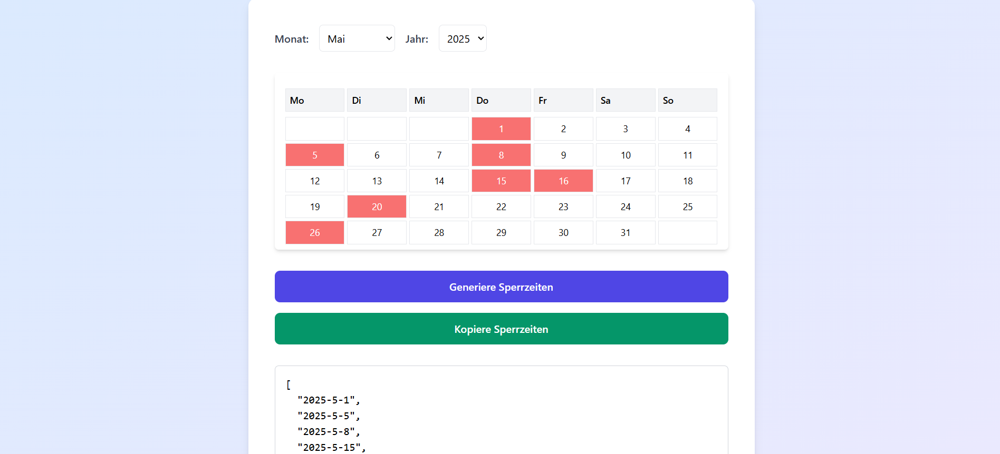
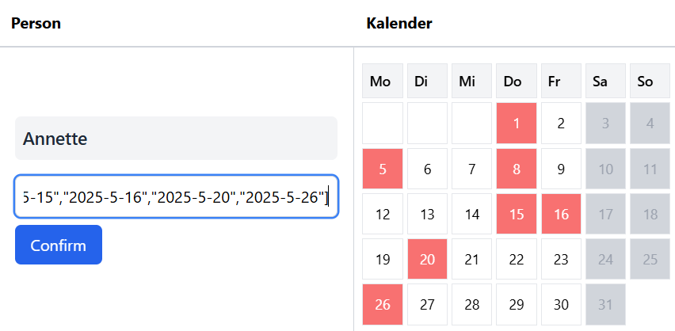
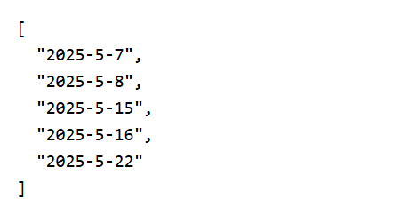
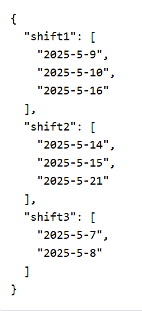
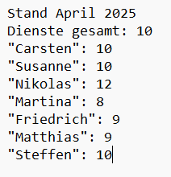
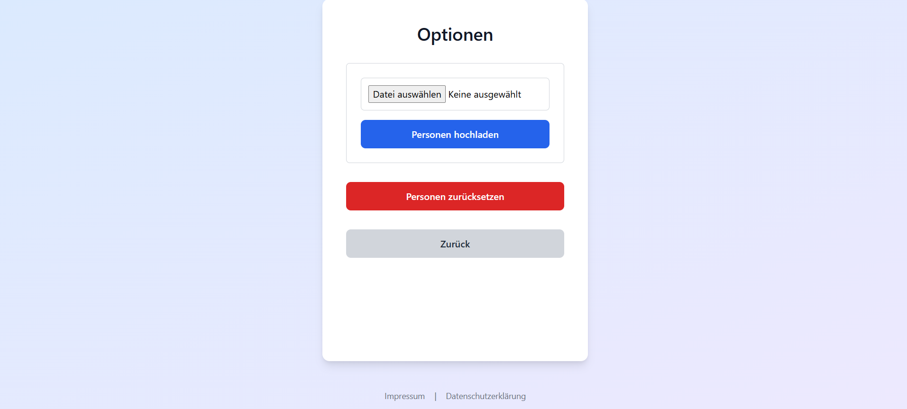

Useful tips to make using the schedule planners easier for you.
Since the schedule planner doesn't use logins, blackout dates must be collected manually – for example, via email.
Use the "Generate Blackout Times" function. Participants can enter their own blackout dates and click "Generate Blackout Times".
Afterwards, the list can be copied using "Copy Blackout Times" and sent to you.
You can then paste this list into the "Paste Generated Blackout Time" field when creating the plan and apply it with one click.
The list format for the Parent Duty Schedule Planner and the Basic Schedule Planner is:
The list format for the Pro Schedule Planner is:
If you want an even distribution over several months, you should track the shifts yourself.
We recommend writing down and summing the shifts after each plan. New people shouldn't start at 0. Therefore, add the highest shift count to new entries to keep the distribution fair.
A simple text document is enough for this. In the future, this feature will be integrated directly into the website.
You can quickly upload or reset all people. To do so, go to Options and select the appropriate field.
People can be uploaded as a simple .txt text file in the format ["Person A", "Person B", "Person C"]. Quotation marks are important.
